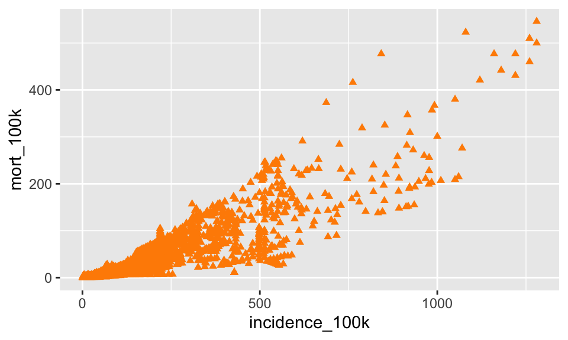
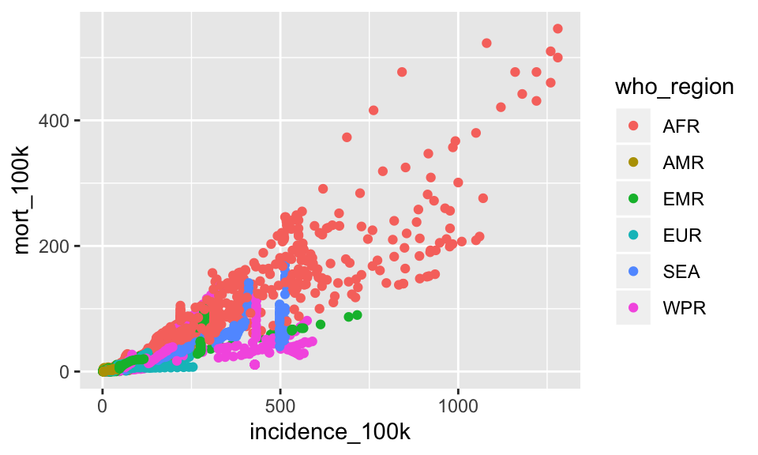
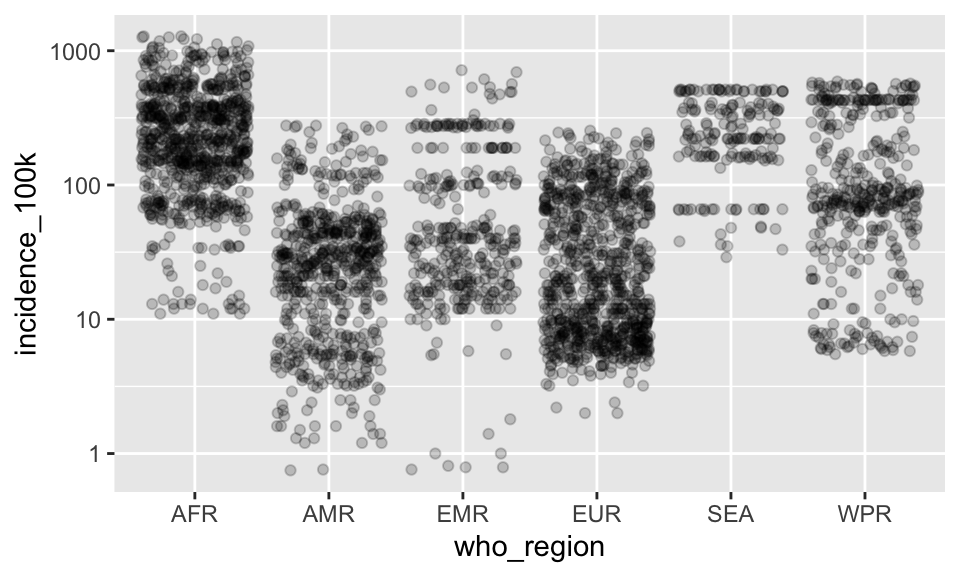
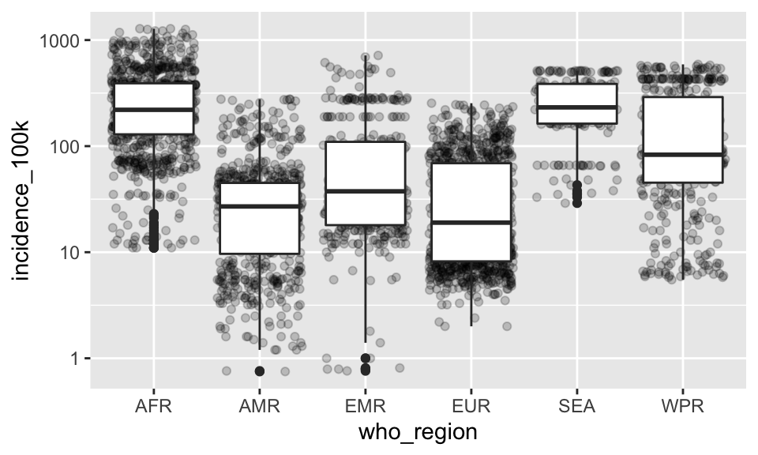

Chapter 2 Data Visualization with ggplot2
This section will cover fundamental concepts for creating effective data visualization and will introduce tools and techniques for visualizing large, high-dimensional data using R. We will review fundamental concepts for visually displaying quantitative information, such as using series of small multiples, avoiding “chart-junk,” and maximizing the data-ink ratio. We will cover the grammar of graphics (geoms, aesthetics, stats, and faceting), and using the ggplot2 package to create plots layer-by-layer.
2.1 Set up
- Start by downloading a dataset about tuberculosis to your local computer so you can play along. Right click the file link below to download
Move the tb file into a directory (folder) called data inside a directory called ggplot. Make sure you know where the ggplot folder is on your computer
Create a new R project in the ggplot directory you made in #2 (File –> New Project –> Existing Directory)
Start new script or Rmd file to play along
For today’s lesson we will need packages in the tidyverse. You will need to have them installed and loaded
# load the tidyverse package
library(tidyverse)
# if the library line errored out, uncomment the install line below and run it
# install.packages("tidyverse")2.2 Read in data
We are going to use the tb dataset today in class. This is a cleaned up version of data on Tuberculosis hosted by the World Health Organization.
The below code will work if you have an R project set up and the tb.csv data file is inside a folder called data inside your project directory called ggplot. For more help setting up a project, go back to the Introductory Lesson /@ref(Intro)
tb <- read_csv("data/tb.csv")## Parsed with column specification:
## cols(
## country = col_character(),
## who_region = col_character(),
## year = col_double(),
## pop = col_double(),
## incidence_100k = col_double(),
## incidence_number = col_double(),
## hiv_percent = col_double(),
## hiv_incidence_100k = col_double(),
## hiv_number = col_double(),
## mort_nohiv_100k = col_double(),
## mort_nohiv_number = col_double(),
## mort_hiv_100k = col_double(),
## mort_hiv_number = col_double(),
## mort_100k = col_double(),
## mort_number = col_double(),
## case_fatality_ratio = col_double(),
## new_incidence_100k = col_double(),
## case_detection_percent = col_double()
## )Let’s take a brief look with glimpse()
glimpse(tb)## Observations: 3,850
## Variables: 18
## $ country <chr> "Afghanistan", "Afghanistan", "Afghanista…
## $ who_region <chr> "EMR", "EMR", "EMR", "EMR", "EMR", "EMR",…
## $ year <dbl> 2000, 2001, 2002, 2003, 2004, 2005, 2006,…
## $ pop <dbl> 20093756, 20966463, 21979923, 23064851, 2…
## $ incidence_100k <dbl> 190, 189, 189, 189, 189, 189, 189, 189, 1…
## $ incidence_number <dbl> 38000, 40000, 42000, 44000, 46000, 47000,…
## $ hiv_percent <dbl> 0.36, 0.30, 0.26, 0.23, 0.22, 0.22, 0.22,…
## $ hiv_incidence_100k <dbl> 0.68, 0.57, 0.49, 0.44, 0.41, 0.42, 0.42,…
## $ hiv_number <dbl> 140, 120, 110, 100, 100, 100, 110, 120, 1…
## $ mort_nohiv_100k <dbl> 67.00, 62.00, 56.00, 57.00, 51.00, 46.00,…
## $ mort_nohiv_number <dbl> 14000, 13000, 12000, 13000, 12000, 12000,…
## $ mort_hiv_100k <dbl> 0.15, 0.17, 0.27, 0.25, 0.21, 0.19, 0.18,…
## $ mort_hiv_number <dbl> 31, 35, 60, 57, 50, 48, 46, 45, 48, 55, 5…
## $ mort_100k <dbl> 67.00, 62.00, 56.00, 57.00, 51.00, 46.00,…
## $ mort_number <dbl> 14000, 13000, 12000, 13000, 12000, 12000,…
## $ case_fatality_ratio <dbl> NA, NA, NA, NA, NA, NA, NA, NA, NA, NA, N…
## $ new_incidence_100k <dbl> 35, 48, 63, 60, 76, 87, 98, 108, 104, 93,…
## $ case_detection_percent <dbl> 19, 26, 33, 32, 40, 46, 52, 57, 55, 49, 5…2.3 Data Pre-Processing
We are going to be plotting 3 of the numeric variables today, incidence_100k, hiv_incidence_100k, and mort_100k.
Today’s lesson is about plotting using ggplot, so to make things a little cleaner, let’s filter the tb dataset for where those variables >0.
In real life, we would certainly be interested in incidence = 0, so this clean up step will remove some important data. After you have familiarized yourself with plotting using ggplot2, I would encourage you to re-run the script with the full dataset. But let’s keep things simpler for now.
We’ll use a function filter() from the dplyr package (loaded as part of the tidyverse) that we saw in the Introductory lesson. The filter() function subsets a dataset for rows matching given logical criteria.
Let’s filter tb for where incidence_100k > 0 and hiv_incidence_100k > 0 and mort_100k > 0
We’ll save the result onto tb to overwrite our original dataset with the cleaned up version we’ll use to plot.
tb <- tb %>%
filter(incidence_100k > 0 & hiv_incidence_100k > 0 & mort_100k > 0)We’ll use some more dplyr verbs to manipulate data throughout the lesson, but for now on to ggplot2
2.4 Basics of ggplot2
ggplot2 is a widely used R package that extends R’s visualization capabilities. It takes the hassle out of things like creating legends, mapping other variables to scales like color, or faceting plots into small multiples. We’ll learn about what all these things mean shortly.
Where does the “gg” in ggplot2 come from? The ggplot2 package provides an R implementation of Leland Wilkinson’s Grammar of Graphics (1999). The Grammar of Graphics allows you to think beyond the garden variety plot types (e.g. scatterplot, barplot) and the consider the components that make up a plot or graphic, such as how data are represented on the plot (as lines, points, etc.), how variables are mapped to coordinates or plotting shape or color, what transformation or statistical summary is required, and so on.
Specifically, ggplot2 allows you to build a plot layer-by-layer by specifying:
- a geom which specifies how the data are represented on the plot (points, lines, bars, etc.),
- aesthetics that map variables in the data to axes on the plot or to plotting size, shape, color, etc.,
- a stat a statistical transformation or summary of the data applied prior to plotting,
- facets that allow the data to be divided into chunks on the basis of other categorical or continuous variables and the same plot drawn for each chunk.
First, a note about qplot(). The qplot() function is a quick way of making ggplot2 plots. You might see it if you look for help with ggplot2. It is a halfway step between plotting in base R and plotting in ggplot2, so if you’re used to making plots with built-in base graphics, the qplot() function will probably feel more familiar.
However, the sooner you abandon the qplot() syntax the sooner you’ll start to really understand ggplot2’s approach to building up plots layer by layer. This lesson should leave you feeling confident about your ability to plot in ggplot2, so let’s leave qplot() behind.
2.5 Plotting bivariate data: continuous X and continuous Y
The ggplot function has two required arguments: the data used for creating the plot, and an aesthetic mapping to describe how variables in said data are mapped to things we can see on the plot.
First, let’s lay out the plot. If we want to plot a continuous Y variable by a continuous X variable we’re probably most interested in a scatter plot. Here, we’re telling ggplot that we want to use the tb dataset, and the aesthetic mapping will map incidence_100k onto the x-axis and hiv_incidence_100k onto the y-axis. Remember that the variable names are case sensitive!
ggplot(tb, aes(x = incidence_100k, y = hiv_incidence_100k))When we do that we get a blank canvas with no data showing. That’s because all we’ve done is laid out a two-dimensional plot specifying what goes on the x and y axes, but we haven’t told it what kind of geometric object to plot. The obvious choice here is a point. Check out docs.ggplot2.org to see what kind of geoms are available.
Add geom_point() using a + after the canvas layer. It is important to notice that the parentheses around the canvas layer formed with the ggplot() function are fully closed, then each subquent layer is it’s own function added to the canvas with +
ggplot(tb, aes(x = incidence_100k, y = hiv_incidence_100k)) +
geom_point()Interesting pattern…
Let’s add some color by changing all the points to be blue
ggplot(tb, aes(x = incidence_100k, y = hiv_incidence_100k)) +
geom_point(color = "blue")
We put the color = "blue" argument in the geom_point() function because we would like to change the color of the points.
Now let’s change the shape of the points. shape = 8 is an *
ggplot(tb, aes(x = incidence_100k, y = hiv_incidence_100k)) +
geom_point(color = "blue", shape = 8)Instead of coloring by a static value, let’s color by the who_region. This time, we will have to call aethetics. Any time you want to map a variable from the dataset onto the plot, it must be in a call to aes()
ggplot(tb, aes(x = incidence_100k, y = hiv_incidence_100k)) +
geom_point(aes(color = who_region))Let’s add another layer showing one smoothed trend line
ggplot(tb, aes(x = incidence_100k, y = hiv_incidence_100k)) +
geom_point(aes(color = who_region)) +
geom_smooth()## `geom_smooth()` using method = 'gam' and formula 'y ~ s(x, bs = "cs")'Notice in the console output that geom_smooth() is fitting the trend line using a Generalized Additive Model (gam). We can read more about that by calling the help menu for geom_smooth
# ?geom_smoothLook at the Arguments section and read the bit about the method argument. We can specify a method, but if we allow the method = "auto" then it will fit loess for < 1000 data points and gam for >= 1000
Let’s change the method to be “lm” to fit a straight line
ggplot(tb, aes(x = incidence_100k, y = hiv_incidence_100k)) +
geom_point(aes(color = who_region)) +
geom_smooth(method = "lm")Clearly the lm is a poor fit for these raw data. Let’s fit a smoothed line (allowing the default method = "auto") separately for each region. Because we want to map who_region onto the plot, we’ll put it in a call to aes()
ggplot(tb, aes(x = incidence_100k, y = hiv_incidence_100k)) +
geom_point(aes(color = who_region)) +
geom_smooth(aes(color = who_region))## `geom_smooth()` using method = 'loess' and formula 'y ~ x'Now each region is fit with method = “loess”
In the above code we now have three calls to aes(). One in the canvas layer, one in the geom_point() layer, and one in the geom_smooth() layer.
If we want ALL the layers to be colored by who_region, we can just specify color = who_region in aes() call in the top canvas layer and all the subsequent layers will inherit that aesthetic mapping just like they inherit the x and y from the canvas layer.
ggplot(tb, aes(x = incidence_100k,
y = hiv_incidence_100k,
color = who_region)) +
geom_point() +
geom_smooth()## `geom_smooth()` using method = 'loess' and formula 'y ~ x'
2.5.1 EXERCISE 1
A. Create a new plot showing incidence_100k on the x axis and mort_100k on the y. Use geom_point()
SHOW ANSWER A
ggplot(tb, aes(x = incidence_100k, y = mort_100k)) +
geom_point()
B. Color the plot in #1 with points that are dark orange triangles (use shape = 17 and color = “darkorange”)
SHOW ANSWER B
ggplot(tb, aes(x = incidence_100k, y = mort_100k)) +
geom_point(shape = 17, color = "darkorange")
C. Color the plot from #1 by the who_region
SHOW ANSWER C
ggplot(tb, aes(x = incidence_100k, y = mort_100k)) +
geom_point(aes(color = who_region))
D. Starting with your plot from #3, add the argument alpha = .3 to the geom_point() function, outside the aes() function. What does alpha do?
SHOW ANSWER D
ggplot(tb, aes(x = incidence_100k, y = mort_100k)) +
geom_point(aes(color = who_region), alpha = .3)
Alpha adds transparency. Specifically an alpha of 1/2 will take 2 points overlapping to make it appear fully opaque. An alpha of 1/3 will take 3 points overlapping to make it appear fully opaque.
2.6 Tranformations
In the plots we have created so far, it looks to me like we should show our incidence rates on a log axis.
We have a few options to accomplish this:
1. use dplyr’s mutate() function to create new, log-transformed variables
2. use the log10() directly in the x = and y = arguments of the plot
3. add log scales to the plot
Because today’s lesson is about the ggplot2 package, we will use the third option
Let’s start with the plot you created made in Exercise 1 problem D showing the tb incidence rate against the mortality rate colored by who_region.
ggplot(tb, aes(x = incidence_100k, y = mort_100k)) +
geom_point(aes(color = who_region), alpha = .3)
Let’s add a log10 scale to both the x and y axes
ggplot(tb, aes(x = incidence_100k, y = mort_100k)) +
geom_point(aes(color = who_region), alpha = .3) +
scale_x_log10() +
scale_y_log10()
Substitute smoothed lines colored by who_region instead of the geom_point()
ggplot(tb, aes(x = incidence_100k, y = mort_100k)) +
geom_smooth(aes(color = who_region)) +
scale_x_log10() +
scale_y_log10()## `geom_smooth()` using method = 'loess' and formula 'y ~ x'2.6.1 EXERCISE 2
A. Create a plot showing the log-transformed incidence_100k on x and log-transformed hiv_incidence_100k on y with smoothed lines colored for each who_region.
SHOW ANSWER A
ggplot(tb, aes(x = incidence_100k, y = hiv_incidence_100k)) +
geom_smooth(aes(color = who_region)) +
scale_x_log10() +
scale_y_log10()## `geom_smooth()` using method = 'loess' and formula 'y ~ x'
B. Turn off the gray standard error bands by including the argument se = FALSE to the geom_smooth() function, outside of the aes() function
SHOW ANSWER B
ggplot(tb, aes(x = incidence_100k, y = hiv_incidence_100k)) +
geom_smooth(aes(color = who_region), se = FALSE) +
scale_x_log10() +
scale_y_log10()## `geom_smooth()` using method = 'loess' and formula 'y ~ x'
C. Starting with your plot from B, add another layer to the plot that shows the data as geom_point() and set the transparency to 0.1.
SHOW ANSWER C
ggplot(tb, aes(x = incidence_100k, y = hiv_incidence_100k)) +
geom_smooth(aes(color = who_region), se = FALSE) +
scale_x_log10() +
scale_y_log10() +
geom_point(alpha = .1)## `geom_smooth()` using method = 'loess' and formula 'y ~ x'# darkgray points under smooth
ggplot(tb, aes(x = incidence_100k, y = hiv_incidence_100k)) +
geom_point(alpha = .1, color = "darkgrey") +
geom_smooth(aes(color = who_region), se = FALSE) +
scale_x_log10() +
scale_y_log10()## `geom_smooth()` using method = 'loess' and formula 'y ~ x'
2.7 Facets
Facets display subsets of the data in different panels. There are a couple ways to do this, but facet_wrap() tries to sensibly wrap a series of facets into a 2-dimensional grid of small multiples.
The facet functions take a formula specifying which variables to facet by. If you have a look at the help for ?facet_wrap() you’ll see that we can control how the wrapping is laid out.
Along the way to teaching you about faceting, I’ll show a strategy to build up a plot by saving layers you like to an object. This way, we can avoid having to copy-paste long lines of code.
Let’s start with a simple plot of incidence_100k on x and hiv_incidence_100k on y.
We’ll add the log-transformed axes, and then save that to an object called p.
p <- ggplot(tb, aes(x = incidence_100k, y = hiv_incidence_100k)) +
scale_x_log10() +
scale_y_log10()
pAdd geom_point() colored darkgray and semi-transparent
p + geom_point(color = "darkgray", alpha = .2)
Now we’ll facet by who_region to show each region in its own plot. As mentioned above, facet_wrap() takes a formula specifying which variable(s) to facet on, so that means we will provide a tilde and then the variable. This syntax sort of breaks our rule of mapping variables using aes() but I think the rationale is that faceting by definition must call a variable from the dataset so that is why we do not need aes()
p +
geom_point(color = "darkgray", alpha = .2) +
facet_wrap(~who_region)Add transparency to geom_point(), add geom_smooth() layer colored by who_region with se = FALSE
p +
geom_point(color = "darkgray", alpha = .2) +
geom_smooth(aes(color = who_region), se = FALSE) +
facet_wrap(~who_region)## `geom_smooth()` using method = 'loess' and formula 'y ~ x'In these plots, the facet and color are redundant mappings of who_region. We typically avoid redundant mappings, but there are reasons to do it (ie readability for color-blind) and in this case, I like the added color.
2.8 Plotting bivariate data: categorical X and continuous Y
With the previous example we examined the relationship between a continuous X variable against a continuous Y variable. A scatter plot was the obvious type of data visualization.
But what if we wanted to visualize a categorical X variable and a continuous Y variable? One example would be x= who_region and y = incidence_100k.
First, let’s set up the basic plot:
p <- ggplot(tb, aes(who_region, incidence_100k))Add points
p + geom_point()
That’s not terribly useful. There’s a big overplotting problem because there is no variability in “AFR”.
What if we spread things out by adding a little bit of horizontal noise (aka “jitter”) to the data.
p + geom_jitter()Note that the little bit of horizontal noise that’s added to the jitter is random. If you run that command over and over again, each time it will look slightly different. The idea is to visualize the density at each vertical position, and spreading out the points horizontally allows you to do that.
Because there is still overplotting, let’s add some transparency by setting the alpha value for the jitter.
p + geom_jitter(alpha = .2)We can also add in the log scale for the y-axis using the same code as before
p +
geom_jitter(alpha = .2) +
scale_y_log10()Let’s save the scaled axis onto p and then recreate the plot
p <- p + scale_y_log10()
p + geom_jitter(alpha = .2)
Probably a more common visualization to show is a box plot:
p + geom_boxplot()
Let’s raw data using jitter and the summary using a boxplot.
p +
geom_jitter(alpha = .2) +
geom_boxplot()
Here, I added the jitter layer then added the boxplot layer, so the boxplot is plotted on top of the jitter layer.
Notice that the outliers in the boxplot layer are represented as points. But there’s no distinction between the outlier point from the boxplot geom and all the other points from the jitter geom.
Let’s change that by coloring the outliers.
p +
geom_jitter(alpha = .2) +
geom_boxplot(outlier.color = "red")There’s another geom that’s useful here, called a voilin plot.
p + geom_violin()p +
geom_jitter(alpha = .2) +
geom_violin()
Let’s go back to our boxplot for a moment.
p + geom_boxplot()
This plot would be a lot more effective if the who_regions were shown in some sort of order other than alphabetical. To do that, we’ll have to go back to our basic build of the plot again and use the reorder() function in our original aesthetic mapping.
reorder() takes the first variable, which is some categorical variable, and orders it by the level of the mean of the second variable, which is a continuous variable.
It looks like this
#reorder region by incidence
ggplot(tb, aes(x = reorder(who_region, incidence_100k), y = incidence_100k)) +
scale_y_log10() +
geom_boxplot()2.8.1 EXERCISE 3
A. Make a jitter plot of who_region on x and hiv_incidence_100k on y.
SHOW ANSWER A
ggplot(tb, aes(x = who_region, y = hiv_incidence_100k)) +
geom_jitter()
B. Add a log-scale to the y-axis.
SHOW ANSWER B
ggplot(tb, aes(x = who_region, y = hiv_incidence_100k)) +
geom_jitter() +
scale_y_log10()
C. Add transparency.
SHOW ANSWER C
ggplot(tb, aes(x = who_region, y = hiv_incidence_100k)) +
geom_jitter(alpha = .2) +
scale_y_log10()
D. Overlay a box plot with colored outliers.
SHOW ANSWER D
ggplot(tb, aes(x = who_region, y = hiv_incidence_100k)) +
geom_jitter(alpha = .2) +
geom_boxplot(outlier.color = "red") +
scale_y_log10()
BONUS. Reorder the plot by hiv_incidence_100k
SHOW BONUS ANSWER
# reorder by LOG10 incidence!
ggplot(tb, aes(x = reorder(who_region, log10(hiv_incidence_100k)), y = hiv_incidence_100k)) +
geom_jitter(alpha = .2) +
geom_boxplot(outlier.color = "red") +
scale_y_log10()
2.9 Plotting univariate continuous data
What if we just wanted to visualize distribution of a single continuous variable? A histogram is the usual go-to visualization. Here we only have one aesthetic mapping instead of two.
ggplot(tb, aes(incidence_100k))# set this as the canvas
p <- ggplot(tb, aes(incidence_100k))Add geom_histogram()
p + geom_histogram()## `stat_bin()` using `bins = 30`. Pick better value with `binwidth`.Add the log scale to the canvas and then re-create the plot
p <- p + scale_x_log10()
p + geom_histogram()## `stat_bin()` using `bins = 30`. Pick better value with `binwidth`.Notice the message in the console that geom_histogram is using bins = 30 as a default. Let’s change the number of bins
p + geom_histogram(bins = 100)Now try to color by who_region.
p + geom_histogram(aes(color = who_region), bins = 50)Well, that is not exactly what I meant. I wanted the inside of the bars colored. Many geoms have arguments that control the outside of the geom (color) and the inside of the geom (fill) separately. We wanted the argument fill instead of color
p + geom_histogram(aes(fill = who_region), bins = 50)If you look at the help for ?geom_histogram you’ll see that by default it stacks overlapping data, so if two regions have a log incidence = 10, one is plotted on the bottom and the second is plotted stacked on top of the first. This is good to visualize the distribution of incidence_100k overall, but because we wanted to see a separate distribution for each region, this is misleading.
Let’s change the position argument so that each region has a baseline of 0.
p + geom_histogram(aes(fill = who_region), bins = 50, position = "identity")That’s better, but still not great. Try transparency
p + geom_histogram(aes(fill = who_region), bins = 50, position = "identity", alpha = .2)Nope. That did not help at all. Try faceting instead.
p + geom_histogram(aes(fill = who_region), bins = 50, position = "identity") +
facet_wrap(~who_region)Great!
Let’s start back at p and plot a smoothed density curve instead of a histogram:
p + geom_density()Notice that a density plot has a different y-axis than histograms. I like histograms when the actual count is important and density plots when comparing the shape across groups (ignoring the differences in sample size) is important.
Now color that by who_region
p + geom_density(aes(color = who_region))This could work for 2 or 3 groups, but with 6, this is crazy. Let’s facet instead
p +
geom_density(aes(color = who_region)) +
facet_wrap(~who_region)Change color to fill
p +
geom_density(aes(fill = who_region)) +
facet_wrap(~who_region)2.10 Saving plots
There are a few ways to save ggplots. The quickest way, that works in an interactive session, is to use the ggsave() function. You give this function a file name and by default it saves the most recent plot that was printed to the screen.
ggsave(filename = "incidence.png")That worked but the best way to save a plot is to pass ggsave() an R object containing the plot and then the file name.
First let’s create an R object containing our plot. I’ll use the opportunity to show you how to dictate the dimensions of the facet
pfinal <- p +
geom_density(aes(fill = who_region)) +
facet_wrap(~who_region, ncol = 1)
pfinalNow we’ll call ggsave() to save out the plot.
We can adjust things like the width, height, and resolution. ggsave() also recognizes the name of the file extension and saves the appropriate kind of file. Let’s save pfinal as a PDF with dimensions 5x15 (inches).
ggsave(pfinal, filename = "incidence.pdf", width=5, height=15)2.10.1 EXERCISE 4
A. Start with a filter() statement to subset tb for just data from the year 2017.
SHOW ANSWER A
tb %>%
filter(year == 2017)## # A tibble: 178 x 18
## country who_region year pop incidence_100k incidence_number
## <chr> <chr> <dbl> <dbl> <dbl> <dbl>
## 1 Afghan… EMR 2017 3.55e7 189 67000
## 2 Albania EUR 2017 2.93e6 20 580
## 3 Algeria AFR 2017 4.13e7 70 29000
## 4 Angola AFR 2017 2.98e7 359 107000
## 5 Argent… AMR 2017 4.43e7 26 12000
## 6 Armenia EUR 2017 2.93e6 36 1100
## 7 Austra… WPR 2017 2.45e7 6.8 1700
## 8 Austria EUR 2017 8.74e6 7.4 650
## 9 Azerba… EUR 2017 9.83e6 67 6500
## 10 Bahamas AMR 2017 3.95e5 15 59
## # … with 168 more rows, and 12 more variables: hiv_percent <dbl>,
## # hiv_incidence_100k <dbl>, hiv_number <dbl>, mort_nohiv_100k <dbl>,
## # mort_nohiv_number <dbl>, mort_hiv_100k <dbl>, mort_hiv_number <dbl>,
## # mort_100k <dbl>, mort_number <dbl>, case_fatality_ratio <dbl>,
## # new_incidence_100k <dbl>, case_detection_percent <dbl>
B. Using your filtered dataset, create a density plot for the log-transformed incidence_100k
SHOW ANSWER B
# keep piping using tb %>% filter() as the dataset
tb %>%
filter(year == 2017) %>%
ggplot(aes(incidence_100k)) +
scale_x_log10() +
geom_density()
C. Facet by who_region and fill by region
SHOW ANSWER C
tb %>%
filter(year == 2017) %>%
ggplot(aes(incidence_100k)) +
scale_x_log10() +
geom_density(aes(fill = who_region)) +
facet_wrap(~who_region)
D. Save your figure in #3 to a 6x10 PDF file
SHOW ANSWER D
# first create an object out of the answer to C
plot4 <- tb %>%
filter(year == 2017) %>%
ggplot(aes(incidence_100k)) +
scale_x_log10() +
geom_density(aes(fill = who_region)) +
facet_wrap(~who_region)
#then save
ggsave(plot4, filename = "incidence2017.pdf", width = 10, height = 6)
2.11 Publication ready graphics
Let’s make a plot we made earlier (x = incidence_100k, y = hiv_incidence_100k) with darkgray, transparent points and smooth curves colored by region without the standard error ribbon
# create the canvas
p <- ggplot(tb, aes(x = incidence_100k, y = hiv_incidence_100k)) +
scale_x_log10() +
scale_y_log10()
p
# add the layers and save them onto p
p <- p +
geom_point(alpha = .1, color = "darkgrey") +
geom_smooth(aes(color = who_region), se = FALSE)
p## `geom_smooth()` using method = 'loess' and formula 'y ~ x'Let’s add proper axes labels using labs(). Keep adding to create a title, subtitle, and better legend title (color)
p + labs(x = "TB Incidence per 100k")## `geom_smooth()` using method = 'loess' and formula 'y ~ x'p + labs(x = "TB Incidence per 100k",
y = "HIV Incidence per 100k TB cases")## `geom_smooth()` using method = 'loess' and formula 'y ~ x'p + labs(x = "TB Incidence per 100k",
y = "HIV Incidence per 100k TB cases",
title = "TB and HIV in TB are directly related",
subtitle = "Excluding incidences = 0",
color = "WHO Region")## `geom_smooth()` using method = 'loess' and formula 'y ~ x'# save the labs onto p
p <- p + labs(x = "TB Incidence per 100k",
y = "HIV Incidence per 100k TB cases",
title = "TB and HIV in TB are directly related",
subtitle = "Excluding incidences = 0",
color = "WHO Region")All of the plots we have seen so far have used the default “gray” theme. A theme sets the background color, the look of the axes, color schemes, and the fonts. Let’s see some other options for themes
p + theme_bw()## `geom_smooth()` using method = 'loess' and formula 'y ~ x'p + theme_classic()## `geom_smooth()` using method = 'loess' and formula 'y ~ x'Check out other ggthemes if you’d like to see more options
2.11.1 Custom colors
Finally, we get to choose our own colors! So far we have only used the default ggplot2 colors. Let’s choose custom colors by name by adding a layer scale_color_manual() to our plot. Inside that function we will specify a vector of color names. Remember that to create a vector we use the function c() which stands for concatenate or combine.
p + scale_color_manual(values = c("red", "orange", "yellow", "green", "blue", "purple"))## `geom_smooth()` using method = 'loess' and formula 'y ~ x'To see all the colors with names in R:
colors()There is a beautiful color pallette now built into ggplot2 called viridis. The viridis color scales are easier to read by those with colorblindness, and print well in grey scale. You can read more about the viridis color scheme
When you start typing scale_color_viridis, you will see that there is a function ending in _c and one ending in _d. The c stands for continuous and the d is for discrete. Because our who-region is discrete, let’s choose that option.
Here is a basic discrete color scale:
p + scale_color_viridis_d()## `geom_smooth()` using method = 'loess' and formula 'y ~ x'Finally, the RColorBrewer package is also worth a look for several beautiful color combos.
Hopefully now you feel more confident in creating your own custom graphics in R using ggplot2
2.12 Learn More ggplot2
- Chapters 3, 7 and 28 in R 4 Data Science
- R Graphics Cookbook
- ggplot2 cheatsheet
- viridis color scale
- ggthemes package
- Color in R